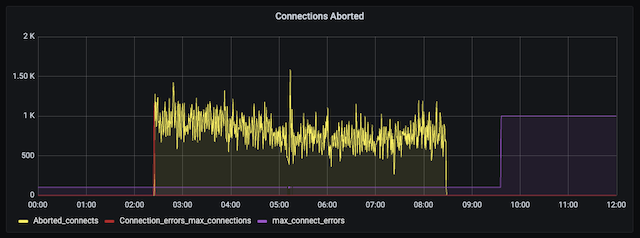

Host is blocked because of many connection errors MySQL
20/01/2025En algún momento MySQL decide bloquear una IP por haber tenido problemas con las conexiones provenientes de un host. Te explico una forma simple, nativa, rápida y eficiente de controlar esta situación sin hacer sobre ingeniería.
En la siguiente gráfica se puede apreciar un ejemplo:

En la gráfica se puede apreciar una secuencia ideal del problema, hay un pico en el contador Connection_errors_max_connections (Rojo), a partir de allí empieza una secuencia de Aborted_connects (Amarillo) hasta que termia al hacer un FLUSH HOSTS y se modifica la variable max_connect_errors (Violeta) para aumentar la tolerancia. Se destaca que la linea Roja supera a la Violeta y la Amarilla indica acceso denegado al host.
Para revisar el contador de conexiones fallidas:
SHOW GLOBAL STATUS LIKE 'Connection_errors_max_connections';
SHOW GLOBAL STATUS LIKE 'Aborted_connects';
Y la variable max_connect_errors que define el número máximo de conexiones fallidas para bloquear la IP del host.
SHOW GLOBAL VARIABLES LIKE 'max_connect_errors';
Para tener detalles de los errores de conexión a futuro, se debe modificar la variable log_error_verbosity con el siguiente valor a tres:
log_error_verbosity = 3
Considere que este nivel de verbosity es para uso temporal con el fin de detectar problemas recurrentes.
Causas:
MySQL tiene un mecanismo de protección para las conexiones que se malforman del lado del cliente, o problemas de red. Al detectarlas se bloquea la IP, para tener más detalles debe hacer uso de la variable log_error_verbosity y verificar el error_log.
En MySQL 5.6 en adelante puedes obtener información básica de los host’s bloqueados haciendo la siguiente consulta:
SELECT * FROM performance_schema.host_cache;
Para conocer un poco más de la tabla host_cache, consulta la documentación.
El log de errores lo puedes revisar de la siguiente forma:
SELECT * FROM performance_schema.error_log;
Es normal que pase una vez al año con uso medio.
Solución inmediata:
La solución que se describe a continuación es de tipo reactiva, ideal para una situación de intervención ante una incidencia.
Ejecutar el siguiente comando para versiones inferiores a MySQL 8.0:
FLUSH HOSTS;
Ejecuta el siguiente comando para la version de MySQL 8.0 en adelante:
TRUNCATE TABLE performance_schema.host_cache;
También puedes usar el comando mysqladmin de la siguiente forma:
mysqladmin -h <HOST> -P <PORT> -u <USER> -p flush-hosts
Solución preventiva:
La siguiente forma es automatizar el proceso indicado en la solución anterior, de esta forma es más de uso preventivo y aprovecha las características propias de MySQL.
Primero deberá incrementar el valor de la variable max_connect_errors a un valor muy alto, por defecto es 100, y la incrementamos a 1000000, con el fin de crear un umbral de tolerancia entre la ejecución del evento mysql.ev_flush_hosts.
Luego deberá crear un evento, el cual es la versión de un cronjob dentro del servicio de MySQL, con el fin de ejecutar el comando cada cierto tiempo.
CREATE EVENT mysql.ev_flush_hosts ON
SCHEDULE EVERY 24 HOUR STARTS '2024-01-01 00:00:00' ON
COMPLETION NOT PRESERVE ENABLE DO
TRUNCATE TABLE performance_schema.host_cache;
Para este ejemplo se crea el evento dentro de la base de datos MySQL, no hay un criterio definido si es correcto o no, si tiene dudas cree su propia base de datos dba y cree allí su evento.
Se puede ajustar el intervalo de ejecución del evento mysql.ev_flush_hosts para ir reduciendo los tiempos y controlar la incidencia.
No te preocupes que el evento y el comando no supone ningún peligro.
Por último, debera verificar si los eventos estan activos (el valor debe estar en ON) y en su defecto activarlos:
SHOW GLOBAL VARIABLES LIKE 'event_scheduler';
De esta forma, ya tienes un mecanismo automático y preventivo para controlar este tipo de error.